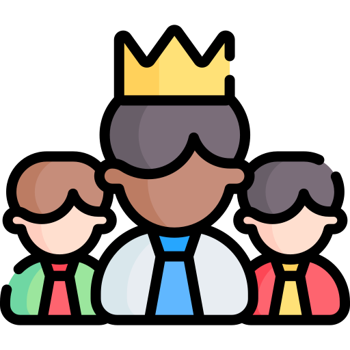
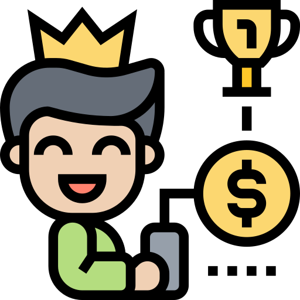

In its simplest terms, gamification makes work, and everyday activities, more fun. Gamification describes the process of applying typical game-like components—like point systems, rewards, problem-solving, and competition—to non-game activities in order to keep people motivated and participating in the task at hand. Across education, business, sports, marketing, and even finance, elements of gamification are being used to guide users in an enhanced brand, app or service experience that aims to entertain them and keep them coming back for more.
Design tasks and challenges, as well as rewards systems or even customized, unique prizes. Why not a monthly leaderboard? Making the user experience fun and engaging does wonders to build and increase user engagement.
Incentivize your users by offering them points and rewards for completion of various tasks. Take it a step further, and make it a competition with their peers. This is a sure way to boost motivation and productivity.
No matter how small they are, rewards give us a lot of joy. Naturally, having a wide range of awards will keep us coming back frequently and working towards getting them. Expect a visible increase in your application traffic.
